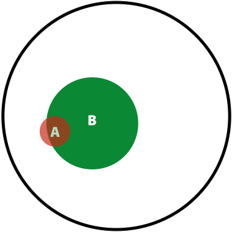

Calling variants in diploid systems
 Anton Nekrutenko
Anton Nekrutenko Nicola Soranzo
Nicola SoranzoOverview
question Questionsobjectives Objectives
How to find variable sites in diploid genomes?
requirements Requirements
Identification of genetic variations using variant calling
- Introduction to Galaxy Analyses
- Sequence analysis
- Quality Control: slides slides - tutorial hands-on
- Mapping: slides slides - tutorial hands-on
time Time estimation: 3 hours
Supporting Materials
last_modification Last modification: Jan 6, 2021
Today we hear a lot about personalized medicine. Yet the personalization is defined by the genetic make up of the individual. In this tutorial we will discuss how this information can be uncovered from the genomic sequencing data.
Agenda
In this tutorial, we will deal with:
Calling variants
Variant calling is a complex field that was significantly propelled by advances in DNA sequencing and efforts of large scientific consortia such as the 1000 Genomes. Here we summarize basic ideas central to Genotype and Variant calling. First, let’s contrast the two things although they often go together:
- Variant calling - identification of positions where the sequenced sample is different from the reference sequence (or reference genome graph)
- Genotype calling - identifying individual’s genotype at variable sites.
A typical workflow for variation discovery involves the following steps (e.g., see Nielsen et al. 2011):
- Mapping reads against the reference genome
- Thresholding BAM datasets by, for example, retaining paired, properly mapped reads
- Performing quality score recalibration
- Performing realignment
- Performing variant calling/genotype assignment
- Performing filtering and genotype quality score recalibration
- Annotating variants and performing downstream analyses
However, continuing evolution of variant detection methods has made some of these steps obsolete. For instance, omitting quality score recalibration and re-alignment (steps 3 and 4 above) when using haplotype-aware variant callers such as FreeBayes does not have an effect on the resulting calls (see Brad Chapman’s methodological comparisons at bcbio). Before going forward with an actual genotype calling in Galaxy let’s take a look as some basic ideas behind modern variant callers.
How does SNP calling and genotyping work?
Consider a set of sequencing reads derived from a diploid individual:
REFERENCE: atcatgacggcaGtagcatat
--------------------------------
READ1: atcatgacggcaGtagcatat
READ2: tgacggcaGtagcatat
READ3: atcatgacggcaAtagca
READ4: cggcaGtagcatat
READ5: atcatgacggcaGtagc
The capitalized position contains a G → A transition. So, in principle this can be a heterozygous site with two alleles G and A. A commonly used naïve procedure would define a site as heterozygous if there is a non-reference allele with frequency between 20% and 80%. In this case A is present in 1/5 or 20% of the cases, so we can say that this is a heterozygous site. Yet it is only represented by a single read and thus is hardly reliable. Here are some of the possibilities that would explain this variant. It can be:
- a true variant
- an experimental artifact, e.g. a library preparation error
- a base calling error
- an analysis error, e.g. a misalignment (though unlikely in the above example)
The modern variant callers attempt to assign a reliability estimate for each genotype call. This is done using Bayes reasoning (for a great visual explanation see blog by Oscar Bonilla). Here we present a SNP-relevant “translation” on this explanation (with inspiration from Erik Garrison).
Suppose in a population you have \(A\) individuals (not to be confused with nucleotide A; in this case \(A\) is a number of individuals) with a variant. You are performing re-sequencing and observe a variant in \(B\) (again, a number) of your sequencing reads. We want to estimate the probability of having the real polymorphism in the population given our observations in sequencing reads. The logic is as follows:
- The probability of having polymorphism A in the population is \(P(A) = \lvert A \rvert / \lvert U \rvert\)
- The probability of seeing a variant given our identification approach (i.e., sequencing) is \(P(B) = \lvert B \rvert / \lvert U \rvert\)
Now, the probability of having a variant and it being observed in our sequencing data is the overlap between \(A\) and \(B\) sets: \(P(AB) = \lvert AB \rvert / \lvert U \rvert\). This is presented graphically below:
| Polymorphisms | Variant Calls | Polymorphisms and Variant Calls |
|---|---|---|
 |
 |
 |
| \(P(A)\) | \(P(B)\) | \(P(AB)\) |
Now we can ask the following question: What is the probability of a having a real polymorphism \(A\) given our observation of variants in reads \(B\)? In other words, what is the probability of \(A\) given \(B\)? Or, as stated in the original blog: “given that we are in region \(B\), what is the probability that we are in the region \(AB\)?”
\[P(A \vert B) = \frac{\lvert AB \rvert}{\lvert B \rvert}\]Dividing both numerator and denominator by \(\lvert U \rvert\):
\[P(A \vert B) = \frac{\frac{\lvert AB \rvert}{\lvert U \rvert}}{\frac{\lvert B \rvert}{\lvert U \rvert}}\]Because we know that \(P(AB) = \frac{\lvert AB \rvert}{\lvert U \rvert}\) and \(P(B) = \frac{\lvert B \rvert}{\lvert U \rvert}\), we can rewrite the equation above as:
\[P(A \vert B) = \frac{P(AB)}{P(B)}\]Now, let’s ask an opposite question. Given a true polymorphism \(A\), what are the chances that we do detect it (i.e. find ourselves in \(AB\))? It will be:
\[P(B \vert A) = \frac{P(AB)}{P(A)}\]So, because we know that \(P(A \vert B) = \frac{P(AB)}{P(B)}\) and we just reasoned that \(P(B \vert A) = \frac{P(AB)}{P(A)}\), we can say that \(P(A \vert B)P(B) = P(B \vert A)P(A)\), leading us to the Bayes formula:
\[P(A \vert B) = \frac{P(B \vert A)P(A)}{P(B)}\]Translating this into “genomics terms”, the probability of having a genotype \(G\) given sequencing reads \(S\) is: \(P(G \vert S) = \frac{P(S \vert G)P(G)}{P(S)}\). Because in a given calculation of \(P(G \vert S)\) the reads are fixed, we can re-write the Bayes formula in the following way:
\[P(G \vert S) \sim P(S \vert G)P(G)\]with \(P(S)\) becoming a constant. This leaves us with the need to estimate two things:
- \(P(S \vert G)\), the data likelihood
- \(P(G)\), the prior probability for the variant.
In the simplest case we can estimate these as follows:
\(P(S \vert G)\)
Suppose \(S_i\) is a base in read \(i\) corresponding to a genome position with genotype \(G\). The probability of seeing \(S_i\) given \(G\), or \(P(S_i \vert G)\), is given by the quality score of \(S_i\) (the quality scores are given by base calling software and reported as phred scores). Thus the genotype likelihood \(P(S \vert G)\) is the product of \(P(S_i \vert G)\) over all \(i\). In reality however there are many other sources of uncertainty (in addition to base qualities) that are incorporated in the calculation of data likelihoods including NGS technology-related issues, dependency of error rates on substitution type (e.g., transitions versus transversions), sequencing context etc…
\(P(G)\) - a single sample case
One can assign an equal probability to all possible genotypes, or to source this information based on previously obtained knowledge containing in a database, such as dbSNP. In this case (as exemplified in Nielsen et al. 2011) we may, for instance, have a site with a G/T polymorphism and genotypes GG, TT, and GT having frequencies of 0.45, 0.45, 0.09, respectively. We will use these values as priors.
\(P(G)\) - a multi-sample case
Genotype calling reliability can be significantly improved when analyzing multiple samples jointly. In this case genotype frequencies can be inferred from allele frequencies using Hardy-Weinberg equilibrium (HWE). The following example (again from Nielsen et al. 2011) illustrates this idea: suppose you are calling genotypes for a single individual using a combination of multiple samples. There are two genotypes, AT and AA, with equally large genotype likelihoods. If, however, in our collection of multiple samples the frequency of A is 1% (\(p = 0.01\); \(q = 1 - p = 0.99\)), then from the HWE we have:
| AA (\(p^2\)) | AT (\(2pq\)) | TT (\(q^2\)) |
|---|---|---|
| 0.0001 | 0.0198 | 0.9801 |
This makes it highly unlikely that AA is a true genotype of this individual.
Calling with FreeBayes
FreeBayes is an open source variant caller that has been battle-tested by the 1000 Genomes community and is extensively used today (also see bcbio). It has a number of features that simplify variant discovery workflows. These include (from FreeBayes github page):
- Indel realignment is accomplished internally using a read-independent method, and issues resulting from discordant alignments are dramatically reduced through the direct detection of haplotypes
- The need for base quality recalibration is avoided through the direct detection of haplotypes. Sequencing platform errors tend to cluster (e.g. at the ends of reads), and generate unique, non-repeating haplotypes at a given locus
- Variant quality recalibration is avoided by incorporating a number of metrics, such as read placement bias and allele balance, directly into the Bayesian model
- Ability to incorporate non-diploid cases such as pooled datasets or data from polyploid samples.
Freebayes is a haplotype-based variant caller. This implies that instead of looking at an individual positions within an alignment of reads to the reference genome, it looks at a haplotype window, length of which is dynamically determined (see section 3.2. in FreeBayes manuscript):
The data
In this example we will perform variant calling and annotation using genome in the bottle data. Specifically, we will use Ashkenazim Father-Mother-Son trio data from the Personal Genome Project:
- HG002 - NA24385 - huAA53E0 (son)
- HG003 - NA24149 - hu6E4515 (father)
- HG004 - NA24143 - hu8E87A9 (mother)
Yet for a quick tutorial these datasets are way too big, so we created a downsampled dataset. This dataset was produced by mapping the trio reads against the hg19 version of the human genome, merging the resulting bam files together (we use readgroups to label individual reads so they can be traced to each of the original individuals), and restricting alignments to a small portion of chromosome 19 containing the POLRMT gene.
hands_on Hands-on: Data upload
Create a new history for this variant calling exercise
tip Tip: Creating a new history
Click the new-history icon at the top of the history panel
If the new-history is missing:
- Click on the galaxy-gear icon (History options) on the top of the history panel
- Select the option Create New from the menu
- Import the files named
GIAB-Ashkenazim-Trio.txt(tabular format) andGIAB-Ashkenazim-Trio-hg19(BAM format) from Zenodo or a data library:- Specify the used genome for mapping:
- Click on the galaxy-pencil pencil icon for the BAM dataset to edit its attributes
- Select
Human Feb 2009on Database/Build- Click the Save button
Generating and post-processing FreeBayes calls
hands_on Hands-on: Generating FreeBayes calls
- FreeBayes tool with the following parameters:
- “Choose the source for the reference genome”:
locally cached- “BAM dataset”: the uploaded
GIAB-Ashkenazim-Trio-hg19BAM dataset- “Using reference genome”:
Human (Homo sapiens): hg19- “Choose parameter selection level”:
5. Full list of options- “Algorithmic features”:
Set algorithmic features- “Calculate the marginal probability of genotypes and report as GQ in each sample field in the VCF output”:
Yes(This would help us evaluating the quality of genotype calls)
This will produce a dataset in VCF format containing 35 putative variants. Before we can continue, we need to post-process this dataset by breaking compound variants into multiple independent variants.
hands_on Hands-on: Simplify variant representation
- VcfAllelicPrimitives tool with:
- “Select VCF dataset”: the VCF output of FreeBayes tool
- “Maintain site and allele-level annotations when decomposing”:
Yes- “Maintain genotype-level annotations when decomposing”:
Yes
VCFAllelicPrimitives generates a VCF files containing 37 records (the input VCF only contained 35). This is because a multiple nucleotide polymorphism (TAGG|CAGA) at position 618851 have been converted to two:
| Before | After |
|---|---|
chr19 618851 . TAGG CAGA 81.7546 |
chr19 618851 . T C 81.7546chr19 618854 . G A 81.7546 |
Annotating variants with SnpEff
At this point we are ready to begin annotating variants using SnpEff. SnpEff “…annotates and predicts the effects of variants on genes (such as amino acid changes)…” and so is critical for functional interpretation of variation data.
hands_on Annotating variants
- SnpEff (Variant effect and annotation) tool with:
- “Sequence changes (SNPs, MNPs, InDels)”: the VCF output of VcfAllelicPrimitives tool
- “Genome source”:
Locally installed reference genome- “Genome”:
Homo sapiens: hg19
SnpEff will generate two outputs:
- an annotated VCF file
- an HTML report
The report contains a number of useful metrics such as distribution of variants across gene features:

or changes to codons:

Manipulating variation data with GEMINI
Now that we have an annotated VCF file it is time to peek inside our variation data. Aaron Quinlan, creator of GEMINI, calls it Detective work.
Loading data into GEMINI
The first step is to convert a VCF file we would like to analyze into a GEMINI database. For this we will use GEMINI Load tool. GEMINI takes as input a VCF file and a PED file describing the relationship between samples. In our case the PED file looks like this (second imported file):
| #family_id | sample_id | paternal_id | maternal_id | sex | phenotype | ethnicity |
|---|---|---|---|---|---|---|
| family1 | HG004_NA24143_mother | -9 | -9 | 2 | 1 | CEU |
| family1 | HG003_NA24149_father | -9 | -9 | 1 | 1 | CEU |
| family1 | HG002_NA24385_son | HG003_NA24149_father | HG004_NA24143_mother | 1 | 2 | CEU |
hands_on Hands-on: Loading data into GEMINI
- GEMINI load tool with:
- “VCF file to be loaded in the GEMINI database”: the VCF output of SnpEff tool
- “Sample information file in PED+ format”: the uploaded
GIAB-Ashkenazim-Trio.txttabular- “Choose a gemini annotation database”: the most recent available release
This will create an SQLite database in your history.
- Run GEMINI db_info tool to see the content of the database:
- “GEMINI database”: the output of GEMINI load tool
This produces a list of all database tables and their columns. The latest version of the GEMINI database schema can be found here.
Querying the GEMINI database
The GEMINI database can be queried using the versatile SQL language (more on SQL here). In Galaxy this is done using the GEMINI query tool. Within this tool SQL commands are typed directly into the The query to be issued to the database text box. Let’s begin getting information from some of the tables we discovered using the GEMINI db_info tool above.
comment GEMINI tutorials
The examples below are taken from “Introduction to GEMINI” tutorial. For extensive documentation see “Querying the GEMINI database”.
hands_on Hands-on: Selecting “novel” variants that are not annotated in dbSNP database
- GEMINI query tool with:
- “GEMINI database”: the output of GEMINI load tool
- “The query to be issued to the database”:
SELECT count(*) FROM variants WHERE in_dbsnp == 0As we can see in the output dataset, there are 21 variants that are not annotated in dbSNP.
hands_on Find variants within the POLRMT gene
- GEMINI query tool with:
- “GEMINI database”: the output of GEMINI load tool
- “The query to be issued to the database”:
SELECT rs_ids, aaf_esp_ea, impact, clinvar_disease_name, clinvar_sig FROM variants WHERE filter is NULL and gene = 'POLRMT'Since the
variantstable has a large number of columns, in the query above we had to select only the most interesting columns. The output shows the variants found within the POLRMT gene.
Querying genotypes
GEMINI provides access to genotype, sequencing depth, genotype quality, and genotype likelihoods for each individual (subjectID):
gt_types.subjectID- three types of genotype types:HOM_REF,HET,HOM_ALTgt_quals.subjectID- genotype qualitygt_depths.subjectID- total number of reads in this subject at positiongt_ref_depths.subjectID- number of reference allele reads in this subject at positiongt_alt_depths.subjectID- number of alternate allele reads in this subject at position
question Questions
- At how many sites does child have a non-reference allele?
- At how many sites both father and son have non reference alleles?
- List genotypes for father and son where they have non-reference alleles.
solution Solution
- To answer this question you can run the GEMINI query tool tool with:
- “The query to be issued to the database”:
SELECT * from variants- “Restrictions to apply to genotype values”:
gt_types.HG002_NA24385_son <> HOM_REF- To answer this question you can run the GEMINI query tool tool with:
- “The query to be issued to the database”:
SELECT * from variants- “Restrictions to apply to genotype values”:
(gt_types.HG002_NA24385_son <> HOM_REF AND gt_types.HG003_NA24149_father <> HOM_REF)- To answer this question you can run the GEMINI query tool tool with:
- “The query to be issued to the database”:
SELECT gts.HG002_NA24385_son, gts.HG003_NA24149_father from variants- “Restrictions to apply to genotype values”:
(gt_types.HG002_NA24385_son <> HOM_REF AND gt_types.HG003_NA24149_father <> HOM_REF)
Using wildcards
Wildcards simply writing SQL expressions when searching across multiple terms. The syntax for genotype filter wildcards is:
(COLUMN).(SAMPLE_WILDCARD).(SAMPLE_WILDCARD_RULE).(RULE_ENFORCEMENT)
Let’s look at some examples.
question Question
At which variants are every sample heterozygous?
solution Solution
To answer this question you can run the GEMINI query tool tool with:
- “The query to be issued to the database”:
SELECT chrom, start, end, ref, alt, gene, impact, (gts).(*) FROM variants- “Restrictions to apply to genotype values”:
(gt_types).(*).(==HET).(all)Here we use wildcards for the query (
(gts.(*))means get genotypes for all samples) and genotype filtering ((gt_types).(*).(==HET).(all), the all operator implies that we want results for all affected individuals).
Going further
This short tutorial should give you an overall idea on how generate variant data in Galaxy and process it with GEMINI. Yet there is much more to learn. Below we list GEMINI tutorials and links to Galaxy libraries with relevant data:
| Tutorial | Galaxy library | Galaxy history | |
|---|---|---|---|
| Introduction | references | galaxy-library | galaxy-history |
| Identifying de novo mutations underlying Mendelian disease | references | galaxy-library | galaxy-history |
| Identifying autosomal recessive variants underlying Mendelian disease | references | galaxy-library | galaxy-history |
| Identifying autosomal dominant variants underlying Mendelian disease | references | galaxy-library | galaxy-history |
How to use these tutorials?
- Right click on the PDF references icon and open tutorial in a new browser tab
- Right click on Galaxy history galaxy-history icon and open Galaxy history in another new browser tab
-
When the Galaxy history interface opens, you will need to click the Import history link highlighted with a red outline in the following figure:
-
If you have a wide screen arrange browsers tabs side by side:

-
Proceed with the tutorial. For example, to repeat the following command from GEMINI tutorial:

use Galaxy’s GEMINI query tool as below:

- and so on….
keypoints Key points
Variants versus Genotypes
Bayesian approach to variant calling
Freebayes calls variant using haplotype windows
SNPEff allows functional annotation of variants
Gemini is a flexible system for analyzing variation patterns
Useful literature
Further information, including links to documentation and original publications, regarding the tools, analysis techniques and the interpretation of results described in this tutorial can be found here.
Feedback
Did you use this material as an instructor? Feel free to give us feedback on how it went.

Citing this Tutorial
- Anton Nekrutenko, Nicola Soranzo, 2021 Calling variants in diploid systems (Galaxy Training Materials). /training-material/topics/variant-analysis/tutorials/dip/tutorial.html Online; accessed TODAY
- Batut et al., 2018 Community-Driven Data Analysis Training for Biology Cell Systems 10.1016/j.cels.2018.05.012
details BibTeX
@misc{variant-analysis-dip, author = "Anton Nekrutenko and Nicola Soranzo", title = "Calling variants in diploid systems (Galaxy Training Materials)", year = "2021", month = "01", day = "06" url = "\url{/training-material/topics/variant-analysis/tutorials/dip/tutorial.html}", note = "[Online; accessed TODAY]" } @article{Batut_2018, doi = {10.1016/j.cels.2018.05.012}, url = {https://doi.org/10.1016%2Fj.cels.2018.05.012}, year = 2018, month = {jun}, publisher = {Elsevier {BV}}, volume = {6}, number = {6}, pages = {752--758.e1}, author = {B{\'{e}}r{\'{e}}nice Batut and Saskia Hiltemann and Andrea Bagnacani and Dannon Baker and Vivek Bhardwaj and Clemens Blank and Anthony Bretaudeau and Loraine Brillet-Gu{\'{e}}guen and Martin {\v{C}}ech and John Chilton and Dave Clements and Olivia Doppelt-Azeroual and Anika Erxleben and Mallory Ann Freeberg and Simon Gladman and Youri Hoogstrate and Hans-Rudolf Hotz and Torsten Houwaart and Pratik Jagtap and Delphine Larivi{\`{e}}re and Gildas Le Corguill{\'{e}} and Thomas Manke and Fabien Mareuil and Fidel Ram{\'{\i}}rez and Devon Ryan and Florian Christoph Sigloch and Nicola Soranzo and Joachim Wolff and Pavankumar Videm and Markus Wolfien and Aisanjiang Wubuli and Dilmurat Yusuf and James Taylor and Rolf Backofen and Anton Nekrutenko and Björn Grüning}, title = {Community-Driven Data Analysis Training for Biology}, journal = {Cell Systems} }